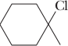

Conversion of Alcohols to a haloalkanes
Conversion of an alcohol to a haloalkane involves substitution of halogen for −OH at a saturated carbon. The most common reagents for this conversion are the halogen acids (HCl, HBr, and HI) and certain inorganic halides (PBr3, SOCl2, and SOBr2).
Reaction with HCl, HBr, and HI
| 2-Methyl-2-propanol (tert-Butyl alcohol) |
+ | HCl | 25 °C ⟶ |
2-Chloro-2-methylpropane |
+ | H2O |
Reaction is evident by formation of a water-insoluble chloroalkane that separates from the aqueous layer. Low-molecular-weight, water-soluble primary and secondary alcohols are unreactive under these conditions.
Water-insoluble tertiary alcohols are converted to tertiary halides by bubbling gaseous HX through a solution of the alcohol dissolved in diethyl ether or tetrahy-drofuran (THF).
| 1-Methylcyclohexanol (1-Methylcyclohexanol) |
+ | HCl | 0 °C ⟶ ehter |
 1-Chloro-1-methyl-cyclohexane |
+ | H2O |
Water-insoluble primary and secondary alcohols react only slowly under these conditions.
Primary and secondary alcohols are converted to bromoalkanes and iodoalkanes by treatment with hydrobromic and hydroiodic acids. For example, when heated to reflux with concentrated HBr, 1-butanol is converted smoothly to 1-bromobutane.

+ HBr ⟶H2Oreflux
+ H2O
Many secondary alcohols give at least some rearranged product, evidence for the formation of carbocation intermediates during their reaction. For example, treating 3-pentanol with HBr gives 3-bromopentane as the major product, along with some 2-bromopentane.
+ HBr ⟶heat
+
+ H2O
Primary alcohols with extensive b–branching give large amounts of a product derived from rearrangement. For example, treatment of 2,2-dimethyl-1-propanol (neopentyl alcohol) with HBr gives a rearranged product almost exclusively.
+ HBr ⟶

+ H2O
Based on observations of the relative ease of reaction of alcohols with HX (3° . 2° . 1°) and the occurrence of rearrangements, chemists propose an SN1 mechanism for the conversion of tertiary and secondary alcohols to haloalkanes by concentrated HX, with the formation of a carbocation intermediate.